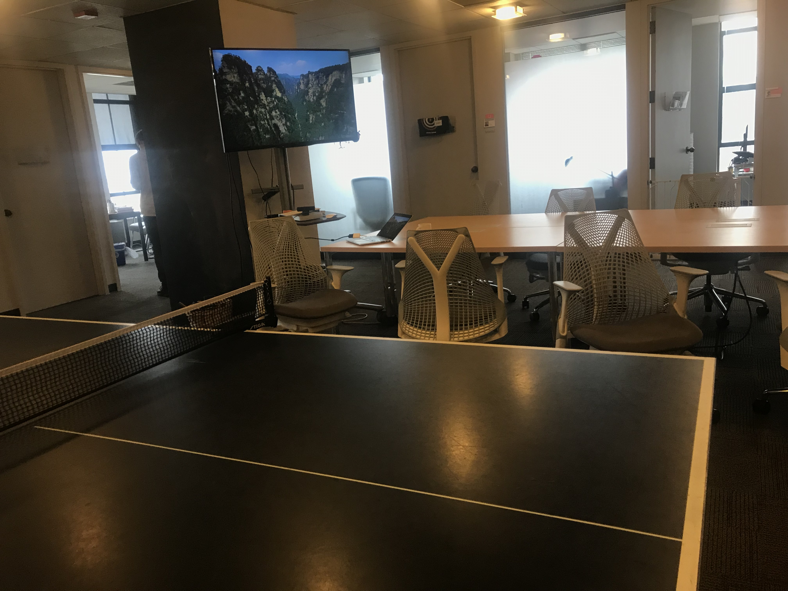

December 06,2018
The start of my day was waking up at 6 in the morning. I came to school and ate a sausage biscuit with no jelly I hate jelly. I went through first period and took my Spanish quiz and made a 80. I then went to English with Mrs. Hrabak, We did a worksheet and worked on our project. After 2nd period that’s when the fun really started as we made our way Archer Malmo downtown in the cold.
Archer Malmo
Archer Malmo is an advertising and marketing consultancy in the United States. The full-service agency was sold in June 2015 and now operates as the Yvonne Tocquigny Branding Group. Archer Malmo is where web designer and programmers work. Clients come here to make their website designs. Archer Malmo have won many awards as there are one of the biggest agencies for this type of work.

Work Space
Working at Archer Malmo gives you more freedom than other places. You can choose what brand computer you would like to work with. Everything is provided for them because this a big technology-based place. There is a Good culture among people they have parties for the holidays and once a month there is a meeting. The way you work and when you work is mostly up to you. If you get the work done then you are okay. THEIRS EVEN A PING PONG TABLE!

Education
You honestly don’t have to go for collage for this career mostly just a GED. If you want to major in computer science you can just in case you leave this career. As long as you know your HTML and CSS you are okay the rest can come as you work.
Tour
After sitting and learning about what you do at Archer Malmo and more we took a tour. Archer Malmo is a very good-looking place. There is good artwork the colors pop and it is very creative. Archer Malmo has a many place the main lobby and the broadcasting room where ads and photoshoots are shot at.
Fun Facts about Archer Malmo
Archer Malmo is full of programmers so they put these skills to use.
The people at Archer Malmo created a little app like thing where you can choose what you want just with your phone.
Want to bring your dog to work? You do not have to wait for some type of pets at work day they are welcomed. As long as you look after them while at wok your dog is welcomed.They also have two large stacks of awards!

Leaving
After leaving Archer Malmo we went to cookout before going back to school and I had a five dollar tray. We came back to school at the end of the day then I went home happy that i got put of some of my classes.
Location, hours, Contact and Social media
- Location: 65 Union Ave, Ste 500, Memphis, TN 38103
- Phone #: 901-523-2000
- hours: 9:00am-5:00pm
- Instagram:
- Facebook:
- Twitter:
- website:archermalmo.com